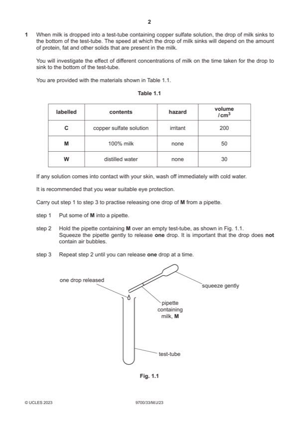

Question 1

Original paper page 2
Part 1(a)(i) — solution
1 at least 3 additional concentrations ; 2
Mark points
- Include the ideas shown in the solution above.
Part 1(a)(ii) — solution
1 heading for percentage concentration of milk ; 5
Mark points
- Include the ideas shown in the solution above.
Part 1(a)(iii) — solution
describes the trend correctly ; 1
Mark points
- Include the ideas shown in the solution above.
Part 1(a)(iv) — solution
medium risk and copper sulfate is an irritant ; 1
Mark points
- Include the ideas shown in the solution above.
Part 1(a)(v) — solution
Answer: 4
4
error improvement
drops sometimes stick to use a wider vessel ;
the side of test-tube ;
drops of milk remain in use fresh copper sulfate each
the milk ; time ;
Mark points
- Correct result: 4
Part 1(b)(i) — solution
1 x-axis: temperature / °C and y-axis density of milk / arbitrary units ; 4
Mark points
- Include the ideas shown in the solution above.
Part 1(b)(ii) — solution
correct answer for the density of milk at 23 °C ; 1
Mark points
- Include the ideas shown in the solution above.
Part 1(b)(iii) — solution
1 between 10 °C and 20 °C the density of milk decreases by 2au (supports hypothesis) ; 2
Mark points
- Include the ideas shown in the solution above.